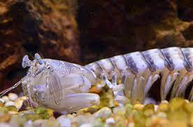

|
 |
 |
|---|---|---|
| Existem mais de 450 espécies da ordem Stomatopoda, a qual pertence o camarão mantis, um crustáceo do tamanho de um dedo. Apesar desse nome, nenhuma delas é um camarão. Na verdade, esses animais possuem um parentesco mais próximo com caranguejos e lagostas. | Aqui esta detalhado as partes fisionomicas do "Stomatopoda ou tamarutaca." tambem podemos notar as partes do seu corpo. | Aqui exemplifica o nincho de variedades que a classe "Stomatopoda ou tamarutaca"." |
Fato sobre o Stomatopoda
Stomatopoda (ou estomatópode), chamados popularmente de tamarutacas ou de lacraias-do-mar no Brasil, é uma ordem de crustáceos marinhos da subclasse Hoplocarida, que agrupa cerca de 400 espécies, caracterizadas principalmente pela morfologia da segunda pata torácica, que é modificada em apêndice subquelado, lembrando uma pata de louva-a-deus.
| Reino | Filo | Subfilo | Classe | Subclasse | Ordem |
|---|---|---|---|---|---|
| Animalia | Arthropoda | Crustacea | Malacostraca | Hoplocarida | Stomatopoda Latreille, 1817 |
Exemplos de familiaridade entre as Classes
Uma abordagem para investigar os atributos funcionais do complexo central é relacionar suas várias elaborações à filogenia de pancrustáceos, a repertórios comportamentais específicos de táxons e configurações ecológicas. Aqui revisamos as semelhanças morfológicas entre o complexo central de crustáceos estomatópodes e o complexo central de insetos dicondílicos. Discutimos se seus complexos centrais possuem propriedades funcionais comparáveis, apesar da distância filética que separa esses táxons, com o camarão mantis (Stomatopoda) pertencente ao ramo basal de Eumalacostraca. Os estomatópodes possuem o sistema receptor visual mais elaborado da natureza e exibem um repertório comportamental fascinante, incluindo destreza apendicular refinada, como pedúnculos oculares que se movem independentemente. Eles também são incomparáveis em sua capacidade de manobra durante a natação e locomoção do substrato. Como outros pancrustáceos, os estomatópodes possuem um conjunto de neurópilos na linha média, chamados de complexo central, que em insetos dicondílicos mediam a seleção de ações motoras para uma série de comportamentos. Assim como nos insetos dicondílicos, o complexo central dos estomatópodes compreende uma ponte protocerebral modular (PB) que fornece axônios decussantes a um corpo recortado em forma de leque (FB) e seu corpo elipsóide (EB) que o acompanha, que está ligado a um conjunto de nódulos emparelhados e outros regiões satélites reconhecidas. Consideramos as implicações funcionais desses atributos no contexto dos comportamentos dos estomatópodes, particularmente de seus pedúnculos oculares que podem se mover de forma independente ou conjunta dependendo da cena visual.
twitter